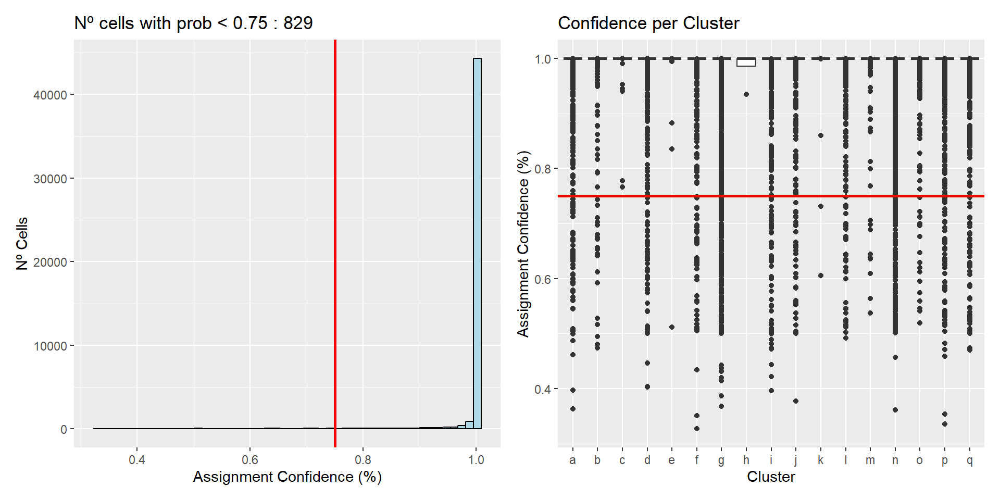
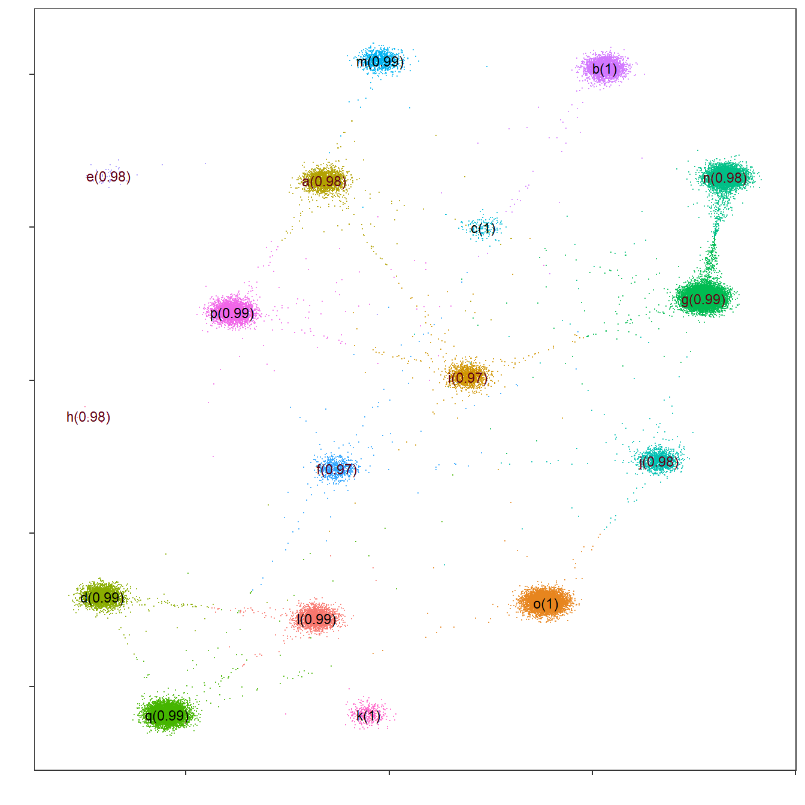
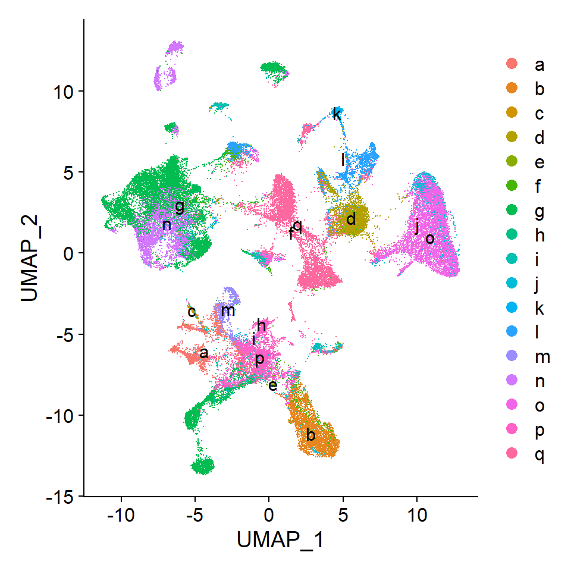
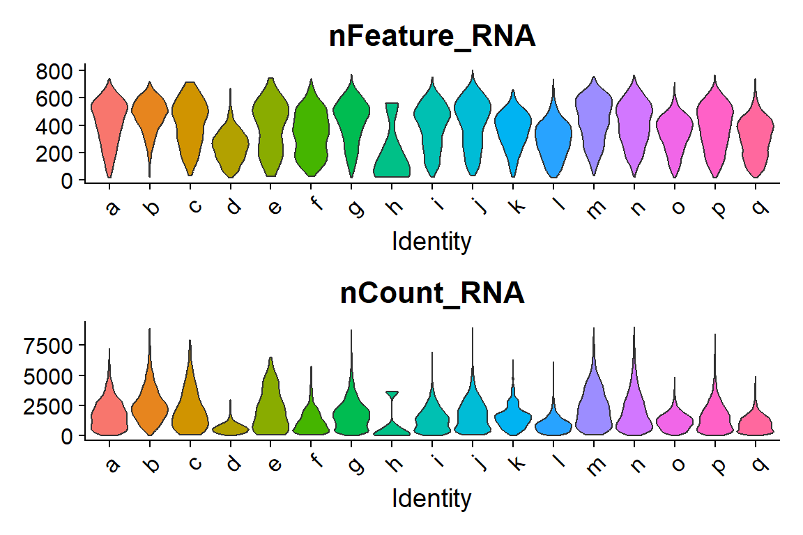
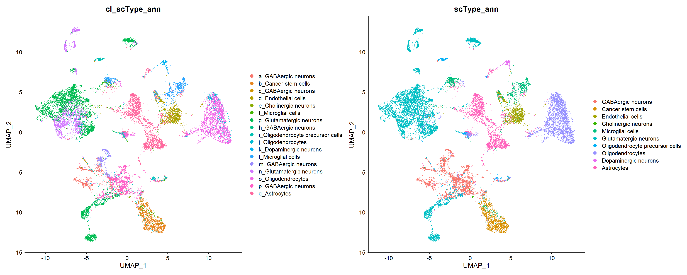
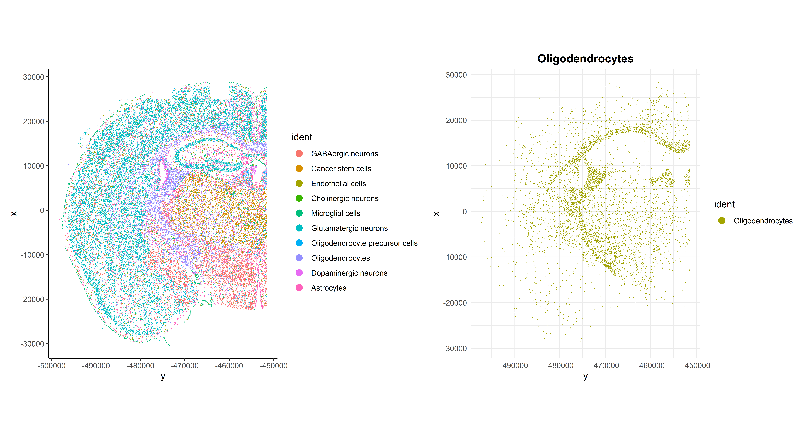
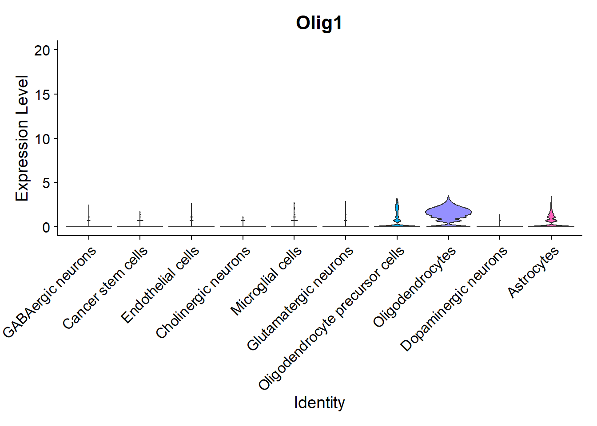
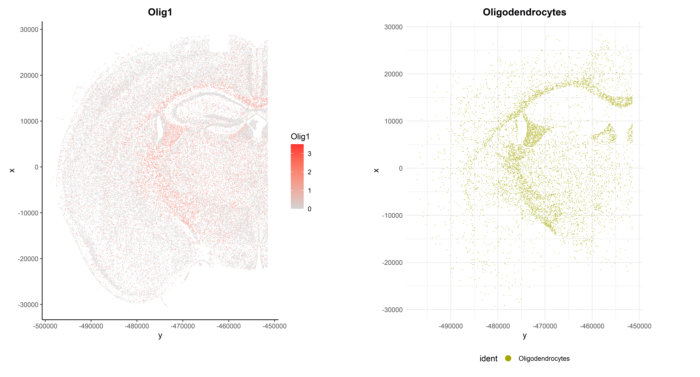

Last updated: 2025-05-20
Checks: 7 0
Knit directory: CosMx_pipeline_LGA/
This reproducible R Markdown analysis was created with workflowr (version 1.7.1). The Checks tab describes the reproducibility checks that were applied when the results were created. The Past versions tab lists the development history.
Great! Since the R Markdown file has been committed to the Git repository, you know the exact version of the code that produced these results.
Great job! The global environment was empty. Objects defined in the global environment can affect the analysis in your R Markdown file in unknown ways. For reproduciblity it’s best to always run the code in an empty environment.
The command set.seed(20250517) was run prior to running
the code in the R Markdown file. Setting a seed ensures that any results
that rely on randomness, e.g. subsampling or permutations, are
reproducible.
Great job! Recording the operating system, R version, and package versions is critical for reproducibility.
Nice! There were no cached chunks for this analysis, so you can be confident that you successfully produced the results during this run.
Great job! Using relative paths to the files within your workflowr project makes it easier to run your code on other machines.
Great! You are using Git for version control. Tracking code development and connecting the code version to the results is critical for reproducibility.
The results in this page were generated with repository version 2b284f3. See the Past versions tab to see a history of the changes made to the R Markdown and HTML files.
Note that you need to be careful to ensure that all relevant files for
the analysis have been committed to Git prior to generating the results
(you can use wflow_publish or
wflow_git_commit). workflowr only checks the R Markdown
file, but you know if there are other scripts or data files that it
depends on. Below is the status of the Git repository when the results
were generated:
Ignored files:
Ignored: .Rproj.user/
Ignored: NBClust-Plots/
Ignored: analysis/figure/
Ignored: data/flatFiles/CoronalHemisphere/Run1000_S1_Half_exprMat_file.csv
Ignored: data/flatFiles/CoronalHemisphere/Run1000_S1_Half_fov_positions_file.csv
Ignored: data/flatFiles/CoronalHemisphere/Run1000_S1_Half_metadata_file.csv
Ignored: output/processed_data/Log/
Ignored: output/processed_data/RC/
Ignored: output/processed_data/SCT/
Ignored: output/processed_data/exprMat_unfiltered.RDS
Ignored: output/processed_data/fov_positions_unfiltered.RDS
Ignored: output/processed_data/metadata_unfiltered.RDS
Ignored: output/processed_data/negMat_unfiltered.RDS
Ignored: output/processed_data/seu_filtered.RDS
Ignored: output/processed_data/seu_semifiltered.RDS
Untracked files:
Untracked: analysis/images/
Unstaged changes:
Modified: output/performance_reports/0.0_data_loading_PR.csv
Modified: output/performance_reports/1.0_qc_and_filtering_PR.csv
Modified: output/performance_reports/2.0_normalization_PR.csv
Modified: output/performance_reports/3.0_dimensional_reduction_PR.csv
Modified: output/performance_reports/4.0_insitutype_cell_typing_PR.csv
Note that any generated files, e.g. HTML, png, CSS, etc., are not included in this status report because it is ok for generated content to have uncommitted changes.
These are the previous versions of the repository in which changes were
made to the R Markdown
(analysis/4.1_insitutype_unsup_clustering.Rmd) and HTML
(docs/4.1_insitutype_unsup_clustering.html) files. If
you’ve configured a remote Git repository (see
?wflow_git_remote), click on the hyperlinks in the table
below to view the files as they were in that past version.
| File | Version | Author | Date | Message |
|---|---|---|---|---|
| Rmd | 8410a10 | lidiaga | 2025-05-17 | Add Rmds files in analysis |
library(data.table) # Efficient data management
library(Matrix) # Sparse matrices
library(here) # Enhanced file referencing in project-oriented workflows
library(dplyr) # For the use of pipes %>%
library(kableExtra) # For table formatting
library(Seurat) # Seurat object
library(ggplot2) # Graphics
library(patchwork) # Layout graphics
library(pheatmap) # Heatmap plot
library(HGNChelper) # For scType annotation
#remotes::install_github("Nanostring-Biostats/InSituType")
library(InSituType)First of all, data needs to be loaded into the session. For this script, two inputs will be needed:
# Indicate the object folder
folder <- "SCT" # Choose between "RC", "Log" or "SCT"
if (!folder %in% c("RC", "Log", "SCT")) {
stop("The selected folder is invalid, choose: 'RC', 'Log' or 'SCT'")
}
# Load Seurat object
name <- paste0("seu_", folder, "_um.RDS")
seu <- readRDS(here("output","processed_data",folder,name))
# Load negMat
negcounts <- readRDS(here("output","processed_data","negMat_unfiltered.RDS"))
# Load the number of PCs used for dimensional reduction
name <- paste0("npcs_", folder, ".RDS")
npcs <- readRDS(here("output","processed_data",folder,name))In this script, clustering will be done using the unsupervised clustering method by InSituType. This method was developed by Nanostring, owner of the CosMx SMI technology, and is, therefore, optimized to work with this type of data specifically.
In order to apply the InSituType algorithm, it is necessary to provide the function with the following information:
# Extract raw counts from the Seurat object
counts <- t(seu@assays[["RNA"]]@counts)
# Note the matrix is transposed to have cells in rows and genes in cols
# Ensure negcounts has the same cells as counts
if (!identical(rownames(counts), rownames(negcounts))) {
negcounts <- negcounts[rownames(counts),] # Filter and/or re-order if needed
}
# Calculate Negative control means per cell
negmean <- rowMeans(negcounts)Additionally, the function can take the following optional inputs, if available:
For this example, immunofluoresce data will be included as a cohort.
# Extract Immunoflurence data (seen in Alex Soupir video's)
imm_fluor <- seu@meta.data %>%
select(contains(c("Mean","Max"))) %>%
select(-contains("DAPI"))
# Set as cohort with InSituType function "fastCohorting"
cohort <- fastCohorting(imm_fluor, gaussian_transform = TRUE)
# This function creates "groups" or similar cells based on their immunofluoresce,
# as that is the input I have given it
table(cohort)cohort
1 2 3 4 5 6 7 8 9 10
5157 12430 10502 2766 4056 3063 2531 1598 3138 2677 As it can be observed, the “fastCohorting” function has created “groups” of similar cells based on their immunofluoresce abundances.
In this method, the user provides a number or a range of clusters to evaluate. Then the function will cluster the cells on the selected number of clusters.
## Code adapted from the InSituType vignette
# Unsupervised Insitutye clustering with immunofluoresce cohort
unsup <- insitutype(
x = counts,
neg = negmean,
assay_type = "RNA",
cohort = cohort,
bg = NULL, # The function will estimate it automatically
reference_profiles = NULL, # Not needed for unsupervised clustering
n_clusts = 5:20, # Will test all these clusters and select the better fit
n_phase1 = 200,
n_phase2 = 500,
n_phase3 = 2000,
n_starts = 1,
max_iters = 5
)As a result the function provides a list with:
## Code adapted from the InSituType vignette
# Clusters
n_clus <- length(unique(unsup$clust))
# Example of probabilities
round(head(unsup$prob), 2)c_1_1_1 c_1_1_2 c_1_1_3 c_1_1_4 c_1_1_5 c_1_1_6
1 1 1 1 1 1 Min. 1st Qu. Median Mean 3rd Qu. Max.
0.3271 1.0000 1.0000 0.9895 1.0000 1.0000 As it can be observed, the algorithm has selected 17 clusters as the better fit, with the majority of cells presenting a high confidence of belonging to the selected cluster.
Now, it might be interesting to explore the confidence ratios in order to select an appropriate threshold for low probability assignments, and/or see if the low probabilities are concentrated in any particular cluster.
As per the InSituType vignette, clusters with an average probability of less than 75% are unreliable. Therefore, for the exploration a threshold of 75% will be selected.
# Determine initial low confidence cells
thresh <- 0.75
low_conf_cells <- names(unsup$prob[unsup$prob < thresh])
n_low <- length(low_conf_cells)
perc_low <- round(n_low / length(unsup$prob) * 100, 1)
# Create dataframe for plotting
df <- data.frame(clust = unsup$clust,
prob = unsup$prob)# Histogram of confidence
p1 <- ggplot(df, aes(x = prob)) +
geom_histogram(bins = 50, fill = "lightblue", colour = "black") +
geom_vline(xintercept = thresh, colour = "red", lwd = 1) +
ggtitle(paste("Nº cells with prob <", thresh, ":", n_low)) +
labs(title = paste("Nº cells with prob <", thresh, ":", n_low),
x = "Assignment Confidence (%)",
y = "Nº Cells")
# Boxplots of confidence by cluster
p2 <- ggplot(df, aes(x = clust, y = prob)) +
geom_boxplot() +
geom_hline(yintercept = thresh, colour = "red", lwd = 1) +
labs(title = "Confidence per Cluster",
x = "Cluster",
y = "Assignment Confidence (%)")
# Arrange plots
p1 + p2
All clusters have an average probability of more than 75%, although many outliers are observed. Finally, there are 829 (1.7 %) cells with an assignment confidence of less than 75 %, showing that most of the cells have been clustered very confidently.
The InSituType package includes an interesting visualization tool called “flightpath_plot”, which represents cells according to their cluster probabilities. This will allow refining the clustering assignation.
## Code adapted from the InSituType vignette
# Create custom color palette
cols <- gg_color_hue(n_clus)
names(cols) <- unique(unsup$clust)
# Flightpath plot
flightpath_plot(insitutype_result = unsup,
col = cols[unsup$clust])
As before, it can be seen that all clusters are very well defined, with average probabilities of nearly 100%. A few connections are observed between some clusters, representing cells whose expression profiles could be confused between said clusters.
After exploration, using the function “refineClusters”, the user can determine whether some clusters should be deleted, merged or subclustered.
However, in this case, all clusters seem very well defined and present good quality assignments scores, so no refining is needed.
Now, the clusters can be included in the Seurat object for UMAP visualization.
# Add new metadata column to seurat object
seu$IST_unsup_clus <- as.factor(unsup$clust)
#seu$IST_unsup_clus_refined <- as.factor(newclusts$clust) # Refined clusters
# Set as default idents
Idents(seu) <- seu$IST_unsup_clus# Create custom color palette
n <- length(unique(Idents(seu)))
cols <- gg_color_hue(n)
# DimPlot of selected resolution
DimPlot(seu, reduction = "umap", label = TRUE, cols = cols, raster = FALSE)
Finally, the visualization of “nFeature” and “nCount” allows to identify clusters with better/lower representation by the CosMx panel.
## Code adapted from CosMxLite vignette
## Points are removed as CosMx datasets can contain over 1 million cells and may hide the violin plot
# Violin plot
VlnPlot(seu, features = c("nFeature_RNA", "nCount_RNA"), ncol = 1, pt.size = 0, group.by = "IST_unsup_clus")
In this script, clusters will be annotated based on their top markers using the “scType” package and its “Brain” reference. For more information about this method check its documentation and vignette here.
## Code adapted from scType vignette
# Load gene set preparation and cell type annotation function
source("https://raw.githubusercontent.com/IanevskiAleksandr/sc-type/master/R/gene_sets_prepare.R")
source("https://raw.githubusercontent.com/IanevskiAleksandr/sc-type/master/R/sctype_score_.R")
# Prepare DB file and select tissue
db_ <- "https://raw.githubusercontent.com/IanevskiAleksandr/sc-type/master/ScTypeDB_full.xlsx";
tissue <- "Brain" # e.g. Immune system, Pancreas, Liver, Kidney, Brain...
# Prepare gene sets
gs_list <- gene_sets_prepare(db_, tissue)
# Extract scaled data from the Seurat object
if (folder == "SCT") {
slot <- "SCT"
} else {
slot <- "RNA"
}
scaled_data <- as.matrix(seu[[paste0(slot)]]@scale.data) ## Code adapted from scType vignette
# Run ScType
es.max <- sctype_score(scaled_data, scaled = TRUE,
gs = gs_list$gs_positive,
gs2 = gs_list$gs_negative)
# Merge by cluster
cL_resutls <- do.call("rbind", lapply(unique(seu@meta.data$IST_unsup_clus), function(cl) {
es.max.cl = sort(rowSums(es.max[ ,rownames(seu@meta.data[seu@meta.data$IST_unsup_clus==cl, ])]),
decreasing = !0)
head(data.frame(cluster = cl, type = names(es.max.cl), scores = es.max.cl,
ncells = sum(seu@meta.data$IST_unsup_clus==cl)), 10)
}))
sctype_scores <- cL_resutls %>% group_by(cluster) %>% top_n(n = 1, wt = scores)
# Set low-confident (low ScType score) clusters to "unknown"
sctype_scores$type[as.numeric(as.character(sctype_scores$scores)) < sctype_scores$ncells/4] <- "Unknown"
## Self coded addition
# Maintain original cluster separation
sctype_scores$cl_type <- paste0(sctype_scores$cluster, "_", sctype_scores$type)
# Sort by cluster
sctype_scores <- sctype_scores %>% arrange(as.numeric(sctype_scores$cluster))
print(sctype_scores)# A tibble: 17 × 5
# Groups: cluster [17]
cluster type scores ncells cl_type
<fct> <chr> <dbl> <int> <chr>
1 a GABAergic neurons 16076. 2108 a_GABAergic neurons
2 b Cancer stem cells 5091. 2908 b_Cancer stem cells
3 c GABAergic neurons 1592. 154 c_GABAergic neurons
4 d Endothelial cells 20564. 2805 d_Endothelial cells
5 e Cholinergic neurons 324. 45 e_Cholinergic neurons
6 f Microglial cells 1605. 777 f_Microglial cells
7 g Glutamatergic neurons 9202. 11800 g_Glutamatergic neuro…
8 h GABAergic neurons 14.0 5 h_GABAergic neurons
9 i Oligodendrocyte precursor cells 2800. 1393 i_Oligodendrocyte pre…
10 j Oligodendrocytes 4849. 1367 j_Oligodendrocytes
11 k Dopaminergic neurons 1054. 363 k_Dopaminergic neurons
12 l Microglial cells 11669. 2214 l_Microglial cells
13 m GABAergic neurons 12823. 960 m_GABAergic neurons
14 n Glutamatergic neurons 8152. 4988 n_Glutamatergic neuro…
15 o Oligodendrocytes 80506. 6378 o_Oligodendrocytes
16 p GABAergic neurons 6895. 3369 p_GABAergic neurons
17 q Astrocytes 36276. 6284 q_Astrocytes In this case the “Brain” database has confidently annotated all clusters but has merged a lot clusters that got the same label: clusters a, b, d, e and j as GABAergic neurons; c and h as Dopaminergic neurons; g and q as Glutamatergic neurons; f and i as Oligodendrocytes; and o and p as Cancer stem cells.
In order not to loose information, both the scType annotation and a “cluster+scType” annotation will be saved in the seurat object.
# Convert to data.frame and select columns
annot_df <- sctype_scores %>%
dplyr::select(cluster, type, cl_type) %>%
dplyr::mutate(cluster = as.character(cluster))
# Create named vectors for easy mapping
scType_ann <- setNames(annot_df$type, annot_df$cluster)
cl_scType_ann <- setNames(annot_df$cl_type, annot_df$cluster)
# Add new metadata columns to seurat object
seu$scType_ann <- factor(scType_ann[as.character(seu$IST_unsup_clus)],
levels = unique(annot_df$type))
seu$cl_scType_ann <- factor(cl_scType_ann[as.character(seu$IST_unsup_clus)],
levels = annot_df$cl_type)
# Set the cl_scType annotation as default
Idents(seu) <- seu$scType_ann# Save old custom palette for original clusters
n_cl <- n
cols_cl <- cols
# Create custom color palettes
n <- length(unique(Idents(seu)))
cols <- gg_color_hue(n)
# Inspect UMAP scType annotation
p1 <- DimPlot(seu, reduction = "umap", label = FALSE, raster = FALSE,
repel = TRUE, cols = cols_cl, group.by = "cl_scType_ann")
p2 <- DimPlot(seu, reduction = "umap", label = FALSE, raster = FALSE,
repel = TRUE, cols = cols, group.by = "scType_ann")
# Arrange plots
p1 + p2
Now that cells have been annotated, visualizing them in their spatial context becomes more informative. For example, all cells can be visualized simultaneously in the sample or one cell type can be specifically highlighted:
## Code adapted from Seurat Spatial vignette
p1 <- ImageDimPlot(seu, fov = "globalFOV", axes = TRUE, cols = cols) +
theme_classic()
p2 <- ImageDimPlot(seu, fov = "globalFOV", axes = TRUE, cols = cols[3],
cells = WhichCells(seu, idents = "Oligodendrocytes")) +
ggtitle("Oligodendrocytes") +
theme_minimal() +
theme(plot.title = element_text(face = "bold", hjust = 0.5))
# Arrange plots
p1 + p2
Another interesting visualization would be to plot gene expression markers in its spatial context. For example, one typical maker for Oligodendrocytes is Olig1:
## Code adapted from Seurat Spatial vignette
## Points are removed from violin plots as CosMx datasets can contain over 1 million cells and may hide the violin plot
VlnPlot(seu, features = "Olig1", pt.size = 0, y.max = 20) + NoLegend()
As expected, it is highly expressed in Oligodendrocytes and Oligodendrocyte precursor cells, but it can also be observed in its spatial context:## Code adapted from CosMxLite vignette
p1 <- ImageFeaturePlot(seu, fov = "globalFOV", features = "Olig1") +
theme_classic() +
theme(plot.title = element_text(face = "bold", hjust = 0.5))
p2 <- ImageDimPlot(seu, fov = "globalFOV", axes = TRUE, cols = cols[3],
cells = WhichCells(seu, idents = "Oligodendrocytes")) +
ggtitle("Oligodendrocytes") +
theme_minimal() +
theme(plot.title = element_text(face = "bold", hjust = 0.5),
legend.position = "bottom")
# Arrange plots
p1 + p2
| Chunk | Time_sec | Memory_Mb |
|---|---|---|
| Libraries | 7.62 | 457.2 |
| LoadData | 6.99 | 1215.1 |
| PrepData | 0.66 | 205.4 |
| PrepCohort | 9.25 | 2.6 |
| Unsup | 159.81 | 16.6 |
| UnsupProb | 0.51 | 0.1 |
| ExporingUnsupProb | 0.47 | 0.0 |
| VizUnsupProb | 1.58 | 14.1 |
| VizFPUnsup | 4.44 | 12.8 |
| RefinedUnsup | 0.45 | 0.0 |
| AddClus | 0.52 | 0.4 |
| VizClus | 2.12 | 8.9 |
| VizClus2 | 1.40 | 2.5 |
| scTypePrep | 1.96 | 16.3 |
| RunscType | 6.83 | 14.8 |
| AddAnn | 0.54 | 1.1 |
| VizAnn | 3.95 | 13.0 |
| SavingSeuObj | 41.60 | 0.0 |
| SpatialViz | 4.89 | 11.8 |
| MarkerViz1 | 0.94 | 2.9 |
| SpatialViz2 | 5.18 | 8.7 |
| Total | 261.71 | 2004.3 |
R version 4.4.3 (2025-02-28 ucrt)
Platform: x86_64-w64-mingw32/x64
Running under: Windows 11 x64 (build 22000)
Matrix products: default
locale:
[1] LC_COLLATE=Spanish_Spain.utf8 LC_CTYPE=Spanish_Spain.utf8
[3] LC_MONETARY=Spanish_Spain.utf8 LC_NUMERIC=C
[5] LC_TIME=Spanish_Spain.utf8
time zone: Europe/Madrid
tzcode source: internal
attached base packages:
[1] stats graphics grDevices utils datasets methods base
other attached packages:
[1] InSituType_2.0 HGNChelper_0.8.15 pheatmap_1.0.12 patchwork_1.3.0
[5] ggplot2_3.5.1 SeuratObject_4.1.4 Seurat_4.4.0 kableExtra_1.4.0
[9] dplyr_1.1.4 here_1.0.1 Matrix_1.7-2 data.table_1.17.0
[13] workflowr_1.7.1
loaded via a namespace (and not attached):
[1] RcppAnnoy_0.0.22 splines_4.4.3
[3] later_1.4.1 tibble_3.2.1
[5] polyclip_1.10-7 lifecycle_1.0.4
[7] rprojroot_2.0.4 globals_0.16.3
[9] processx_3.8.6 lattice_0.22-6
[11] MASS_7.3-65 SnowballC_0.7.1
[13] magrittr_2.0.3 openxlsx_4.2.8
[15] plotly_4.10.4 sass_0.4.9
[17] rmarkdown_2.29 jquerylib_0.1.4
[19] yaml_2.3.10 httpuv_1.6.15
[21] sctransform_0.4.1 zip_2.3.2
[23] askpass_1.2.1 sp_2.2-0
[25] spatstat.sparse_3.1-0 reticulate_1.41.0.1
[27] cowplot_1.1.3 pbapply_1.7-2
[29] RColorBrewer_1.1-3 abind_1.4-8
[31] zlibbioc_1.52.0 Rtsne_0.17
[33] GenomicRanges_1.58.0 purrr_1.0.4
[35] BiocGenerics_0.52.0 git2r_0.35.0
[37] GenomeInfoDbData_1.2.13 IRanges_2.40.1
[39] S4Vectors_0.44.0 ggrepel_0.9.6
[41] irlba_2.3.5.1 listenv_0.9.1
[43] spatstat.utils_3.1-2 umap_0.2.10.0
[45] goftest_1.2-3 RSpectra_0.16-2
[47] spatstat.random_3.3-2 fitdistrplus_1.2-2
[49] parallelly_1.43.0 svglite_2.1.3
[51] leiden_0.4.3.1 codetools_0.2-20
[53] DelayedArray_0.32.0 xml2_1.3.7
[55] tidyselect_1.2.1 UCSC.utils_1.2.0
[57] farver_2.1.2 matrixStats_1.5.0
[59] stats4_4.4.3 spatstat.explore_3.3-4
[61] jsonlite_1.9.1 progressr_0.15.1
[63] ggridges_0.5.6 survival_3.8-3
[65] systemfonts_1.2.1 tools_4.4.3
[67] ragg_1.4.0 ica_1.0-3
[69] Rcpp_1.0.14 glue_1.8.0
[71] gridExtra_2.3 SparseArray_1.6.2
[73] xfun_0.51 MatrixGenerics_1.18.1
[75] GenomeInfoDb_1.42.3 withr_3.0.2
[77] fastmap_1.2.0 openssl_2.3.2
[79] callr_3.7.6 digest_0.6.37
[81] R6_2.6.1 mime_0.12
[83] textshaping_1.0.0 colorspace_2.1-1
[85] scattermore_1.2 tensor_1.5
[87] spatstat.data_3.1-6 utf8_1.2.4
[89] tidyr_1.3.1 generics_0.1.3
[91] httr_1.4.7 htmlwidgets_1.6.4
[93] S4Arrays_1.6.0 whisker_0.4.1
[95] uwot_0.2.3 pkgconfig_2.0.3
[97] gtable_0.3.6 lmtest_0.9-40
[99] SingleCellExperiment_1.28.1 XVector_0.46.0
[101] htmltools_0.5.8.1 scales_1.3.0
[103] Biobase_2.66.0 png_0.1-8
[105] spatstat.univar_3.1-2 knitr_1.50
[107] rstudioapi_0.17.1 reshape2_1.4.4
[109] nlme_3.1-167 cachem_1.1.0
[111] zoo_1.8-13 stringr_1.5.1
[113] KernSmooth_2.23-26 vipor_0.4.7
[115] parallel_4.4.3 miniUI_0.1.1.1
[117] ggrastr_1.0.2 pillar_1.10.1
[119] grid_4.4.3 vctrs_0.6.5
[121] RANN_2.6.2 lsa_0.73.3
[123] promises_1.3.2 xtable_1.8-4
[125] cluster_2.1.8 beeswarm_0.4.0
[127] evaluate_1.0.3 cli_3.6.4
[129] compiler_4.4.3 rlang_1.1.6
[131] crayon_1.5.3 future.apply_1.11.3
[133] labeling_0.4.3 mclust_6.1.1
[135] ps_1.9.0 ggbeeswarm_0.7.2
[137] getPass_0.2-4 plyr_1.8.9
[139] fs_1.6.5 stringi_1.8.4
[141] viridisLite_0.4.2 deldir_2.0-4
[143] munsell_0.5.1 lazyeval_0.2.2
[145] spatstat.geom_3.3-5 sparseMatrixStats_1.18.0
[147] future_1.34.0 shiny_1.10.0
[149] SummarizedExperiment_1.36.0 ROCR_1.0-11
[151] igraph_2.1.4 bslib_0.9.0
[153] splitstackshape_1.4.8